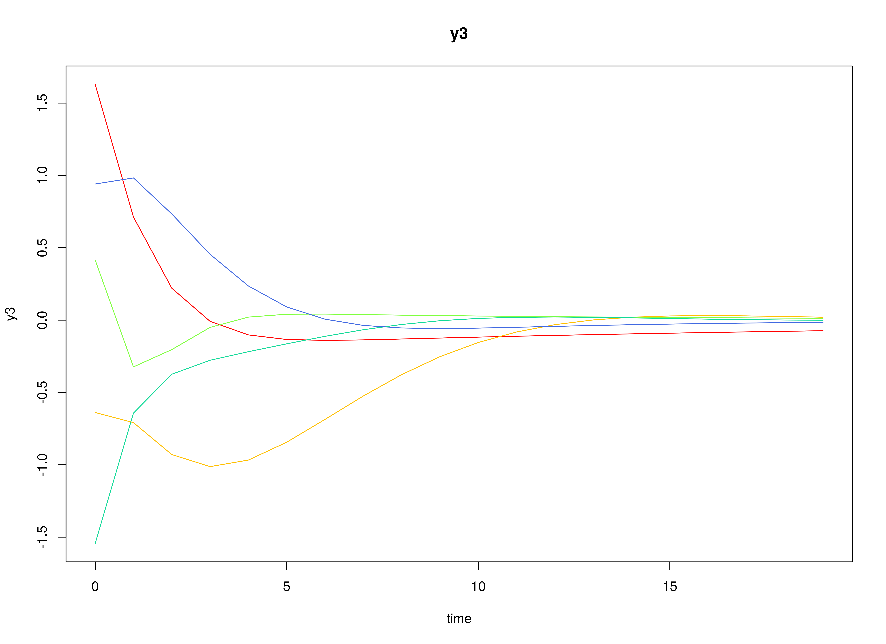
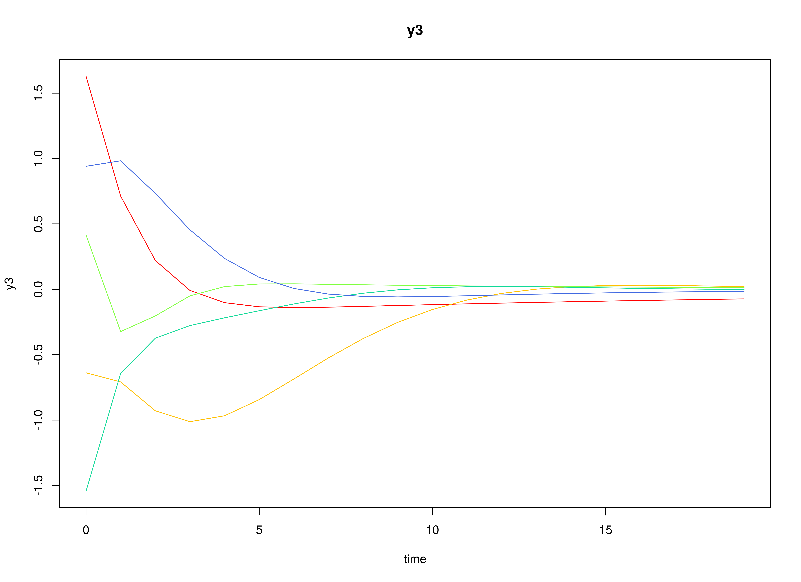

Multivariate Normal (Discrete-Time Vector Autoregressive Model)
Ivan Jacob Agaloos Pesigan
Source:vignettes/mvn-dt-var.Rmd
mvn-dt-var.RmdModel
The measurement model is given by \[\begin{equation} \mathbf{y}_{i, t} = \boldsymbol{\eta}_{i, t} \end{equation}\] where \(\mathbf{y}_{i, t}\) represents a vector of observed variables and \(\boldsymbol{\eta}_{i, t}\) a vector of latent variables for individual \(i\) and time \(t\). Since the observed and latent variables are equal, we only generate data from the dynamic structure.
The dynamic structure is given by \[\begin{equation} \boldsymbol{\eta}_{i, t} = \boldsymbol{\alpha} + \boldsymbol{\beta} \boldsymbol{\eta}_{i, t - 1} + \boldsymbol{\zeta}_{i, t}, \quad \mathrm{with} \quad \boldsymbol{\zeta}_{i, t} \sim \mathcal{N} \left( \mathbf{0}, \boldsymbol{\Psi} \right) \end{equation}\] where \(\boldsymbol{\eta}_{i, t}\), \(\boldsymbol{\eta}_{i, t - 1}\), and \(\boldsymbol{\zeta}_{i, t}\) are random variables, and \(\boldsymbol{\alpha}\), \(\boldsymbol{\beta}\), and \(\boldsymbol{\Psi}\) are model parameters. Here, \(\boldsymbol{\eta}_{i, t}\) is a vector of latent variables at time \(t\) and individual \(i\), \(\boldsymbol{\eta}_{i, t - 1}\) represents a vector of latent variables at time \(t - 1\) and individual \(i\), and \(\boldsymbol{\zeta}_{i, t}\) represents a vector of dynamic noise at time \(t\) and individual \(i\). \(\boldsymbol{\alpha}\) denotes a vector of intercepts, \(\boldsymbol{\beta}\) a matrix of autoregression and cross regression coefficients, and \(\boldsymbol{\Psi}\) the covariance matrix of \(\boldsymbol{\zeta}_{i, t}\).
An alternative representation of the dynamic noise is given by \[\begin{equation} \boldsymbol{\zeta}_{i, t} = \boldsymbol{\Psi}^{\frac{1}{2}} \mathbf{z}_{i, t}, \quad \mathrm{with} \quad \mathbf{z}_{i, t} \sim \mathcal{N} \left( \mathbf{0}, \mathbf{I} \right) \end{equation}\] where \(\left( \boldsymbol{\Psi}^{\frac{1}{2}} \right) \left( \boldsymbol{\Psi}^{\frac{1}{2}} \right)^{\prime} = \boldsymbol{\Psi}\) .
Data Generation
Notation
Let \(t = 100\) be the number of time points and \(n = 100\) be the number of individuals.
Let the initial condition \(\boldsymbol{\eta}_{0}\) be given by
\[\begin{equation} \boldsymbol{\eta}_{0} \sim \mathcal{N} \left( \boldsymbol{\mu}_{\boldsymbol{\eta} \mid 0}, \boldsymbol{\Sigma}_{\boldsymbol{\eta} \mid 0} \right) \end{equation}\]
\[\begin{equation} \boldsymbol{\mu}_{\boldsymbol{\eta} \mid 0} = \left( \begin{array}{c} 0 \\ 0 \\ 0 \\ \end{array} \right) \end{equation}\]
\[\begin{equation} \boldsymbol{\Sigma}_{\boldsymbol{\eta} \mid 0} = \left( \begin{array}{ccc} 0.01 & 0 & 0 \\ 0 & 0.01 & 0 \\ 0 & 0 & 0.01 \\ \end{array} \right) . \end{equation}\]
Let the constant vector \(\boldsymbol{\alpha}\) be given by
\[\begin{equation} \boldsymbol{\alpha} = \left( \begin{array}{c} 0 \\ 0 \\ 0 \\ \end{array} \right) . \end{equation}\]
Let the transition matrix \(\boldsymbol{\beta}\) be normally distributed with the following means
\[\begin{equation} \left( \begin{array}{ccc} 0.7 & 0 & 0 \\ 0.5 & 0.6 & 0 \\ -0.1 & 0.4 & 0.5 \\ \end{array} \right) \end{equation}\]
and covariance matrix
\[\begin{equation} \left( \begin{array}{ccc} 0.01 & 0 & 0 & 0 & 0 & 0 & 0 & 0 & 0 \\ 0 & 0.01 & 0 & 0 & 0 & 0 & 0 & 0 & 0 \\ 0 & 0 & 0.01 & 0 & 0 & 0 & 0 & 0 & 0 \\ 0 & 0 & 0 & 0.01 & 0 & 0 & 0 & 0 & 0 \\ 0 & 0 & 0 & 0 & 0.01 & 0 & 0 & 0 & 0 \\ 0 & 0 & 0 & 0 & 0 & 0.01 & 0 & 0 & 0 \\ 0 & 0 & 0 & 0 & 0 & 0 & 0.01 & 0 & 0 \\ 0 & 0 & 0 & 0 & 0 & 0 & 0 & 0.01 & 0 \\ 0 & 0 & 0 & 0 & 0 & 0 & 0 & 0 & 0.01 \\ \end{array} \right) . \end{equation}\]
NOTE: This example depends on the development version of simStateSpace (1.2.1.9000).
The SimBetaN function from the simStateSpace package generates random transition matrices from the multivariate normal distribution. Note that the function generates transition matrices that are weakly stationary.
Let the dynamic process noise \(\boldsymbol{\Psi}\) be given by
\[\begin{equation} \boldsymbol{\Psi} = \left( \begin{array}{ccc} 0.1 & 0 & 0 \\ 0 & 0.1 & 0 \\ 0 & 0 & 0.1 \\ \end{array} \right) . \end{equation}\]
R Function Arguments
n
#> [1] 100
time
#> [1] 100
mu0
#> [[1]]
#> [1] 0 0 0
sigma0
#> [,1] [,2] [,3]
#> [1,] 0.01 0.00 0.00
#> [2,] 0.00 0.01 0.00
#> [3,] 0.00 0.00 0.01
sigma0_l
#> [[1]]
#> [,1] [,2] [,3]
#> [1,] 0.1 0.0 0.0
#> [2,] 0.0 0.1 0.0
#> [3,] 0.0 0.0 0.1
alpha
#> [[1]]
#> [1] 0 0 0
# first beta in the list of length n
beta[[1]]
#> [,1] [,2] [,3]
#> [1,] 0.6468498 0.02987347 0.09881764
#> [2,] 0.5821253 0.64048586 0.12907652
#> [3,] 0.1217450 0.33748281 0.46598132
psi
#> [,1] [,2] [,3]
#> [1,] 0.1 0.0 0.0
#> [2,] 0.0 0.1 0.0
#> [3,] 0.0 0.0 0.1
psi_l
#> [[1]]
#> [,1] [,2] [,3]
#> [1,] 0.3162278 0.0000000 0.0000000
#> [2,] 0.0000000 0.3162278 0.0000000
#> [3,] 0.0000000 0.0000000 0.3162278
 
Using the SimSSMVARIVary Function from the simStateSpace Package to Simulate Data
library(simStateSpace)
sim <- SimSSMVARIVary(
n = n,
time = time,
mu0 = mu0,
sigma0_l = sigma0_l,
alpha = alpha,
beta = beta,
psi_l = psi_l
)
data <- as.data.frame(sim)
head(data)
#> id time y1 y2 y3
#> 1 1 0 0.01273722 -0.02840351 0.02206214
#> 2 1 1 -0.12682965 0.12232084 -0.09996024
#> 3 1 2 0.14411023 0.55288557 0.29569548
#> 4 1 3 0.27033532 0.53708190 0.15796288
#> 5 1 4 0.42086670 0.89558688 0.44090629
#> 6 1 5 0.75000409 0.83676974 0.39433988
plot(sim)


Multivariate Meta-Analysis
The Meta function performs multivariate meta-analysis using the estimated transition matrices \(\boldsymbol{\beta}\) and the corresponding sampling variance-covariance matrix for each individual \(i\).
meta <- Meta(
fit,
ncores = parallel::detectCores()
)
#> Running Model with 54 parameters
#>
#> Beginning initial fit attempt
#> Running Model with 54 parameters
#>
#> Lowest minimum so far: -263709.253762576
#>
#> Solution found#>
#> Solution found! Final fit=-263709.25 (started at 15592.752) (1 attempt(s): 1 valid, 0 errors)
#> Start values from best fit:
#> 0.138930112538755,0.00214256439932022,-0.00720212468878862,-0.038670688772732,0.00276184943471816,-0.0131702335683732,0.0139264519053117,-0.00481822542362907,-0.0127800730623413,0.160980840593111,-0.00886950475351882,-0.000923811741368618,-0.0160620482395619,-0.00113101724438008,-0.00536118373064293,-0.00930294018571431,0.00466506983682121,0.163945931400279,0.00471452853587313,0.00139982842841324,-0.0263292121625236,0.0143855354819047,0.0124086084181042,0.0145902349829927,0.120344606305684,0.0034476089966316,0.00201758109151178,-0.0332004870458779,0.0033032276855519,0.00295564004852461,0.121708987108671,-0.0139364447838897,0.0105168598865447,-0.0265045147123335,-0.00112197106128337,0.136200475407804,-0.00552321090468321,0.0122954455460807,-0.0305164838828037,0.144338949891911,-0.00650875406326007,-0.0148500880703461,0.147142988763409,-0.00944254471506526,0.134269361382525,0.640600696995588,0.486085526037077,-0.102347804377842,0.0135888929693786,0.581217928353902,0.399397160946591,-0.0112398480654201,-0.00624687311079252,0.465320221682638
summary(meta)
#> est se z p 2.5% 97.5%
#> sigma_11 0.0193 0.0003 70.7107 0.0000 0.0188 0.0198
#> sigma_21 0.0003 0.0002 1.3307 0.1833 -0.0001 0.0007
#> sigma_31 -0.0010 0.0002 -4.3782 0.0000 -0.0014 -0.0006
#> sigma_41 -0.0054 0.0002 -29.2350 0.0000 -0.0057 -0.0050
#> sigma_51 0.0004 0.0002 2.2475 0.0246 0.0000 0.0007
#> sigma_61 -0.0018 0.0002 -9.3620 0.0000 -0.0022 -0.0014
#> sigma_71 0.0019 0.0002 9.2432 0.0000 0.0015 0.0023
#> sigma_81 -0.0007 0.0002 -3.1878 0.0014 -0.0011 -0.0003
#> sigma_91 -0.0018 0.0002 -9.0731 0.0000 -0.0022 -0.0014
#> sigma_22 0.0259 0.0004 70.7106 0.0000 0.0252 0.0266
#> sigma_32 -0.0014 0.0003 -5.4467 0.0000 -0.0020 -0.0009
#> sigma_42 -0.0002 0.0002 -1.1370 0.2555 -0.0006 0.0002
#> sigma_52 -0.0026 0.0002 -12.9337 0.0000 -0.0030 -0.0022
#> sigma_62 -0.0002 0.0002 -0.9326 0.3511 -0.0007 0.0002
#> sigma_72 -0.0008 0.0002 -3.4477 0.0006 -0.0013 -0.0004
#> sigma_82 -0.0015 0.0002 -6.1881 0.0000 -0.0020 -0.0010
#> sigma_92 0.0007 0.0002 3.2025 0.0014 0.0003 0.0012
#> sigma_33 0.0270 0.0004 70.7106 0.0000 0.0263 0.0278
#> sigma_43 0.0011 0.0002 5.0905 0.0000 0.0007 0.0015
#> sigma_53 0.0004 0.0002 1.7435 0.0812 0.0000 0.0007
#> sigma_63 -0.0042 0.0002 -17.9985 0.0000 -0.0047 -0.0038
#> sigma_73 0.0023 0.0002 9.3111 0.0000 0.0018 0.0028
#> sigma_83 0.0022 0.0002 8.6338 0.0000 0.0017 0.0026
#> sigma_93 0.0024 0.0002 10.5368 0.0000 0.0020 0.0029
#> sigma_44 0.0160 0.0002 70.7108 0.0000 0.0156 0.0164
#> sigma_54 0.0003 0.0002 2.1201 0.0340 0.0000 0.0006
#> sigma_64 0.0006 0.0002 3.5481 0.0004 0.0003 0.0010
#> sigma_74 -0.0045 0.0002 -22.8846 0.0000 -0.0048 -0.0041
#> sigma_84 0.0007 0.0002 3.4044 0.0007 0.0003 0.0010
#> sigma_94 0.0009 0.0002 5.1463 0.0000 0.0006 0.0013
#> sigma_55 0.0151 0.0002 70.7108 0.0000 0.0147 0.0155
#> sigma_65 -0.0017 0.0002 -10.0857 0.0000 -0.0021 -0.0014
#> sigma_75 0.0013 0.0002 7.0912 0.0000 0.0009 0.0017
#> sigma_85 -0.0031 0.0002 -16.2733 0.0000 -0.0034 -0.0027
#> sigma_95 -0.0002 0.0002 -1.2543 0.2097 -0.0006 0.0001
#> sigma_66 0.0196 0.0003 70.7108 0.0000 0.0191 0.0202
#> sigma_76 -0.0015 0.0002 -7.2242 0.0000 -0.0019 -0.0011
#> sigma_86 0.0018 0.0002 8.4670 0.0000 0.0014 0.0022
#> sigma_96 -0.0044 0.0002 -21.6451 0.0000 -0.0048 -0.0040
#> sigma_77 0.0225 0.0003 70.7107 0.0000 0.0219 0.0231
#> sigma_87 -0.0012 0.0002 -5.4390 0.0000 -0.0017 -0.0008
#> sigma_97 -0.0021 0.0002 -9.8262 0.0000 -0.0025 -0.0017
#> sigma_88 0.0228 0.0003 70.7107 0.0000 0.0222 0.0235
#> sigma_98 -0.0014 0.0002 -6.7292 0.0000 -0.0018 -0.0010
#> sigma_99 0.0197 0.0003 70.7107 0.0000 0.0191 0.0202
#> mu_1 0.6406 0.0014 461.0954 0.0000 0.6379 0.6433
#> mu_2 0.4861 0.0016 301.9253 0.0000 0.4829 0.4892
#> mu_3 -0.1023 0.0016 -62.2767 0.0000 -0.1056 -0.0991
#> mu_4 0.0136 0.0013 10.7425 0.0000 0.0111 0.0161
#> mu_5 0.5812 0.0012 473.1050 0.0000 0.5788 0.5836
#> mu_6 0.3994 0.0014 285.1610 0.0000 0.3967 0.4021
#> mu_7 -0.0112 0.0015 -7.4921 0.0000 -0.0142 -0.0083
#> mu_8 -0.0062 0.0015 -4.1351 0.0000 -0.0092 -0.0033
#> mu_9 0.4653 0.0014 331.7189 0.0000 0.4626 0.4681